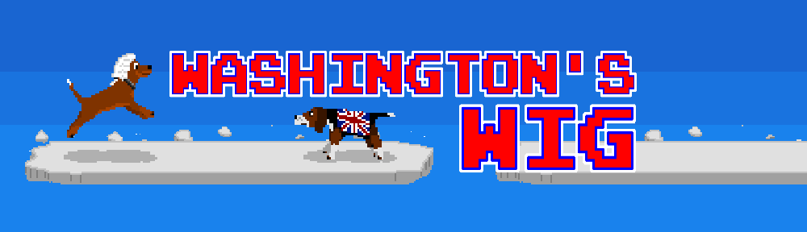

An Epic Tale of Heroism, Dogs, and Wigs...
In this completely historically inaccurate tale, George Washington has embarked on his famous crossing of the Delaware only to realize he has forgotten his precious wig. Join a cast of canines as they bravely race to return the missing hairpiece. Old-school arcade action meets adorable dogs (except the ugly ones) in this fast-paced canine adventure.
The winning game from IGN's THE NEXT GAME BOSS, Washington's Wig is completely FREE and can be downloaded for iPhones and iPads in the App Store and for Android devices from Google Play.